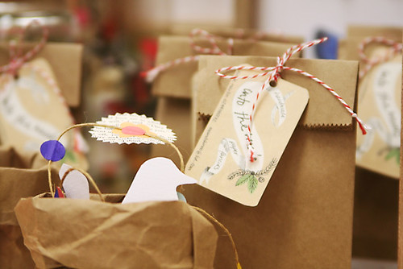

LookCraft™ - Creating Treasured Memories
LookCraft was started with the odd notion that children would enjoy and value the act of giving if they made the presents themselves.
Too often these days, it seems that parents give their children some money to buy presents, drive them to the mall, help them pick something out and wrap it. The value of a gift becomes closely associated with the cost.
LookCraft believes if children hand out are ones they’ve made themselves, they will be more engaged with the gift and both they and the recipients will appreciate the thought and effort that went into the gift.
LookCraft will help children and their parents create treasured gifts that they will be proud to hand out.
LookCraft works with designers to develop gifts that are within the reach of children of various ages and sources the components so that kits can contain all the necessary parts to make the gift. Actually, the plans are posted on line and available for anyone to access. The kits just make it easier and faster to complete the gift as all necessary components are included in the kit.

CEO made a candleholder for his grandparents years ago and still remembers the joy on their faces when they opened it. It is still one of my best memories.
Senior Vice President - Design
Senior Vice President - Operations